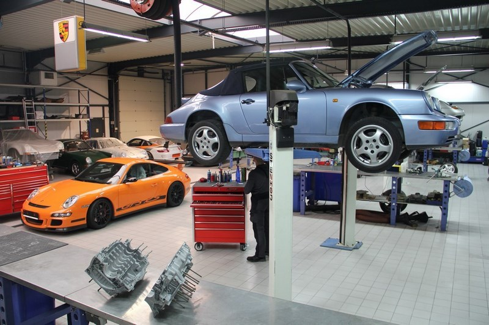

Julien's Porsche Garage, votre destination automobile de confiance à Bruxelles. Depuis notre établissement passionné, nous sommes fiers de proposer une gamme complète de services pour les propriétaires et les amateurs de Porsche. Que vous recherchiez une réparation de haute qualité, l'achat d'une Porsche exceptionnelle ou des conseils d'experts, notre équipe dévouée est là pour répondre à tous vos besoins. Notre expertise inégalée en matière de réparation et d'entretien garantit que votre Porsche est entre les mains de professionnels qualifiés.

De la mécanique minutieuse à l'électronique sophistiquée, nous mettons tout en œuvre pour garder votre véhicule dans un état optimal. Chaque réparation est exécutée avec une attention méticuleuse aux détails, afin que vous puissiez retrouver la sensation de conduite exceptionnelle qui définit une Porsche. Si vous êtes à la recherche de votre prochaine Porsche de rêve, notre sélection soigneusement choisie de véhicules d'occasion de haute qualité est prête à vous émerveiller. Que ce soit pour le plaisir de la conduite quotidienne ou l'excitation des performances sur piste, nous avons la Porsche parfaite pour chaque passionné. Chez Julien's Porsche Garage, notre engagement envers la satisfaction du client est au cœur de tout ce que nous faisons. Notre équipe amicale est là pour vous guider à chaque étape, en vous fournissant des informations et des conseils honnêtes pour que vous puissiez prendre des décisions éclairées concernant votre Porsche.